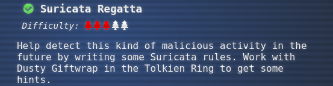
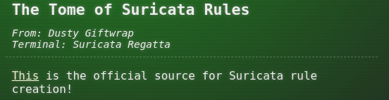
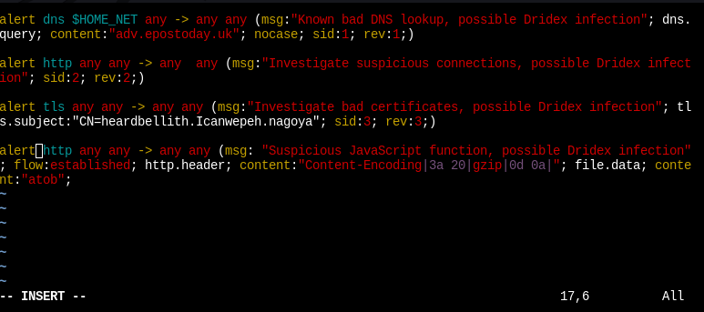

Recover the Tolkien Ring
1.5 Suricata Regatta

Help detect this kind of malicious activity in the future by writing some Suricata rules. Work with Dusty Giftwrap in the Tolkien Ring to get some hints.
Hint(s)

Solve
Terminal answers
Use your investigative analysis skills and the suspicious.pcap file to help develop Suricata rules for the elves!
There's a short list of rules started in suricata.rules in your home directory.
First off, the STINC (Santa's Team of Intelligent Naughty Catchers) has a lead for us. They have some Dridex indicators of compromise to check out. First, please create a Suricata rule to catch DNS lookups for adv.epostoday.uk. Whenever there's a match, the alert message (msg) should read Known bad DNS lookup, possible Dridex infection. Add your rule to suricata.rules
Once you think you have it right, run ./rule_checker to see how you've done! As you get rules correct, rule_checker will ask for more to be added.
If you want to start fresh, you can exit the terminal and start again or cp suricata.rules.backup suricata.rules
Good luck, and thanks for helping save the North Pole!
1.- Please create a Suricata rule to catch DNS lookups for adv.epostoday.uk. Whenever there's a match, the alert message (msg) should read Known bad DNS lookup, possible Dridex infection. Source: https://suricata.readthedocs.io/en/suricata-6.0.0/rules/dns-keywords.html
Solve:
$ echo 'alert dns $HOME_NET any -> any any (msg:"Known bad DNS lookup, possible Dridex infection"; dns.query; content:"adv.epostoday.uk"; nocase; sid:1; rev:1;) ' >>suricata.rules
$ ./rule_checker
2.- STINC thanks you for your work with that DNS record! In this PCAP, it points to 192.185.57.242. Develop a Suricata rule that alerts whenever the infected IP address 192.185.57.242 communicates with internal systems over HTTP. When there's a match, the message (msg) should read Investigate suspicious connections, possible Dridex infection. Source: https://suricata.readthedocs.io/en/suricata-6.0.0/rules/http-keywords.html
Solve:
$ echo 'alert http any any -> any any (msg:"Investigate suspicious connections, possible Dridex infection"; sid:2; rev:2;)' >> suricata.rules
$ ./rule_checker
3.- We heard that some naughty actors are using TLS certificates with a specific CN. Develop a Suricata rule to match and alert on an SSL certificate for heardbellith.Icanwepeh.nagoya. When your rule matches, the message (msg) should read Investigate bad certificates, possible Dridex infection. Source: https://suricata.readthedocs.io/en/suricata-6.0.0/rules/tls-keywords.html
Solve:
$ echo 'alert tls any any -> any any (msg:"Investigate bad certificates, possible Dridex infection"; tls.subject:"CN=heardbellith.Icanwepeh.nagoya"; sid:3; rev:3;)' >> suricata.rules
$ ./rule_checker
4.- OK, one more to rule them all and in the darkness find them. Let's watch for one line from the JavaScript: let byteCharacters = atob Oh, and that string might be GZip compressed - I hope that's OK! Just in case they try this again, please alert on that HTTP data with message Suspicious JavaScript function, possible Dridex infection. Source: https://suricata.readthedocs.io/en/suricata-6.0.0/rules/http-keywords.html#http-protocol
Solve:
$ echo 'alert http any any -> any any (msg: "Suspicious JavaScript function, possible Dridex infection"; flow:established; http.header; content:"Content-Encoding|3a 20|gzip|0d 0a|"; file.data; content:"atob";' >> suricata.rules
$ ./rule_checker
